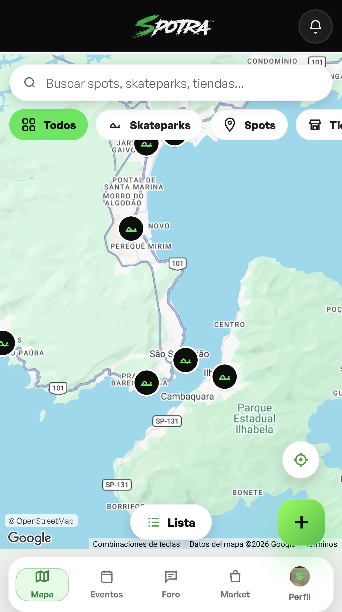
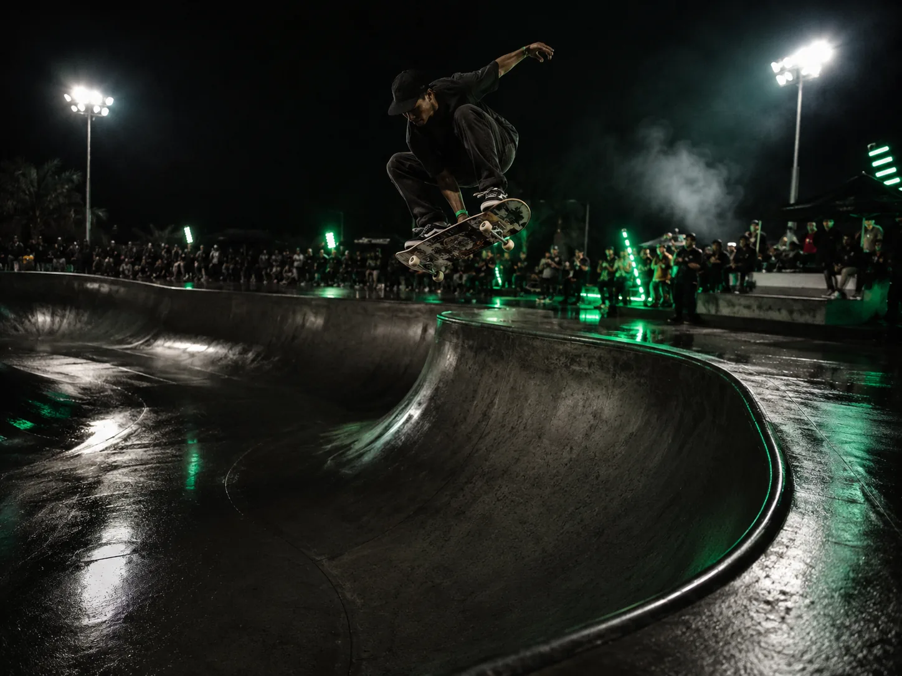
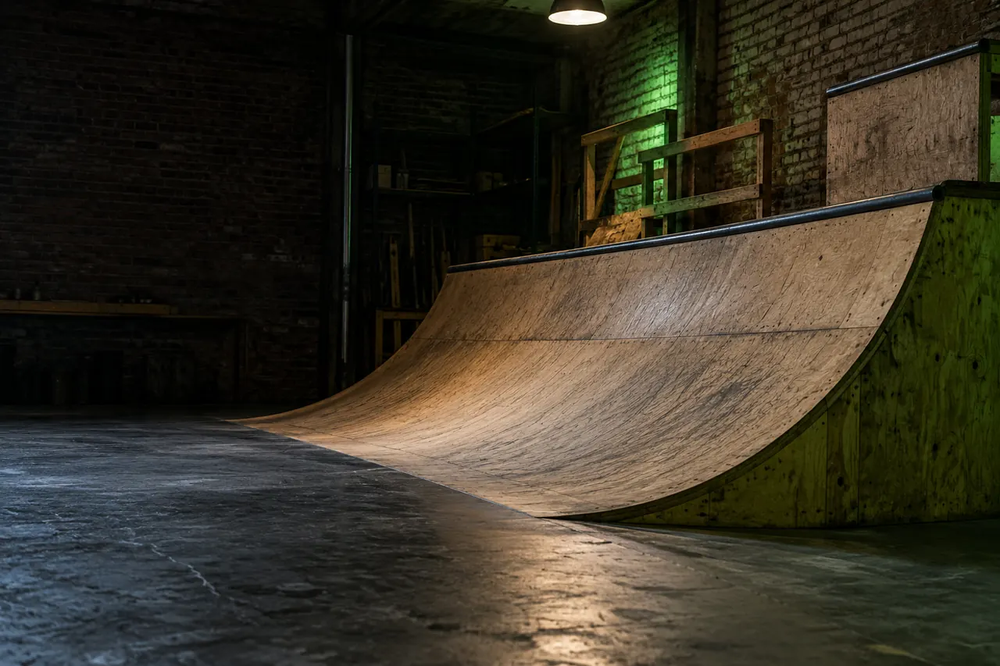
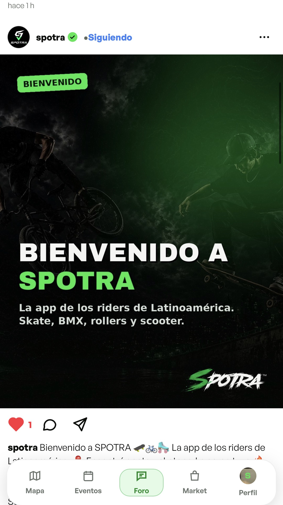
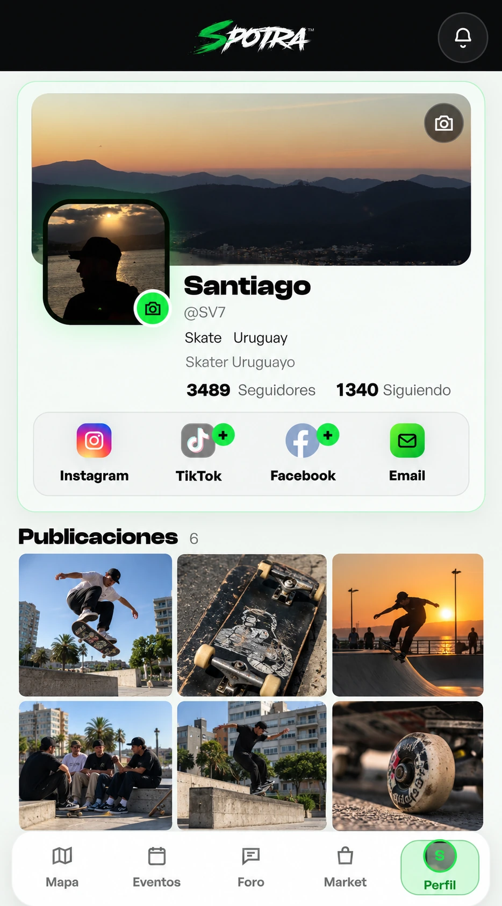
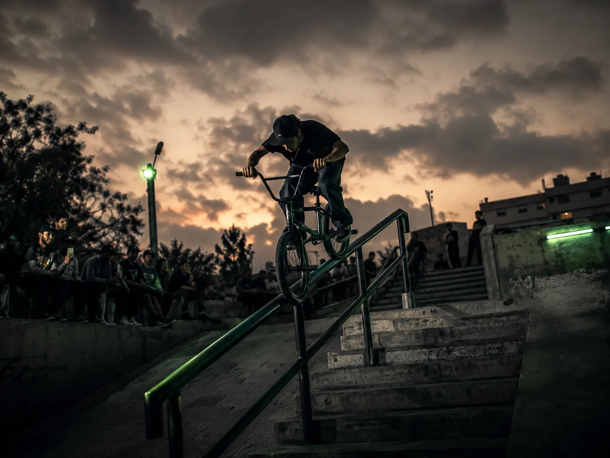
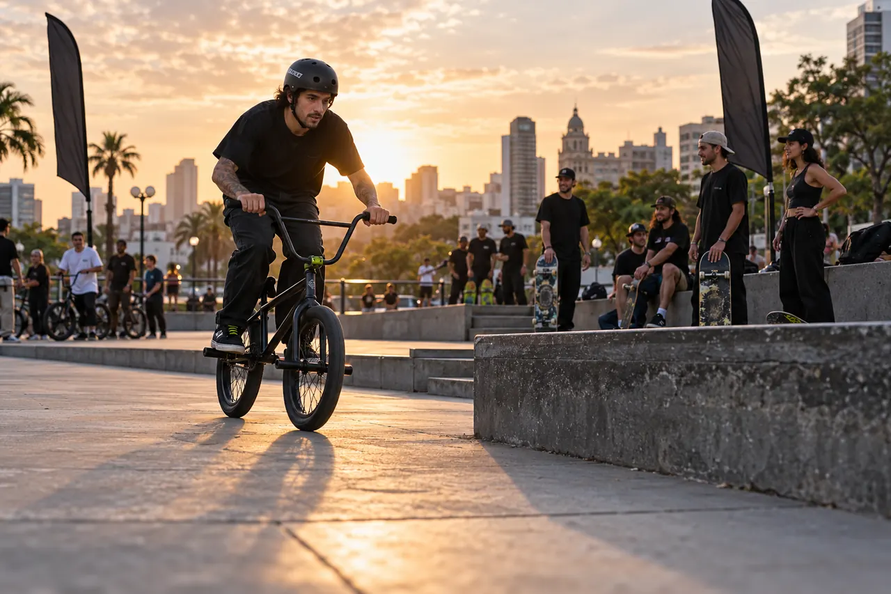
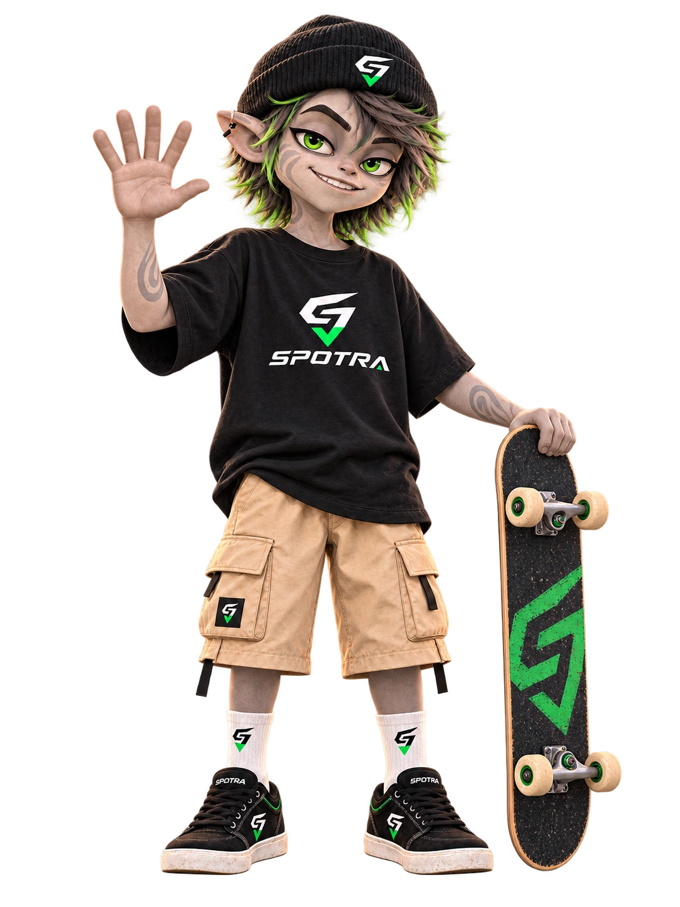
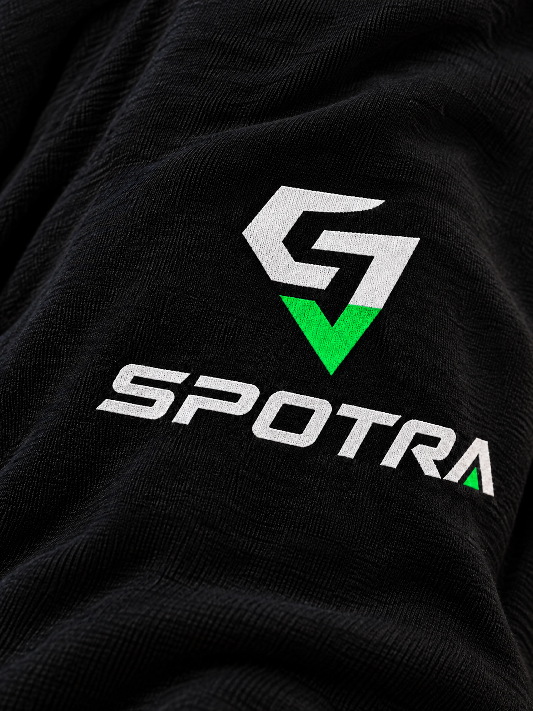

01 / SPOTRA POR DENTRO

SPOTRI

HECHO POR LA COMUNIDAD, PARA LA COMUNIDAD.HOLA. OLÁ. HELLO.
¡Bienvenido a SPOTRA!
Bem-vindo à SPOTRA! / Welcome to SPOTRA!
01 / Idioma / Language
Haz scroll y SPOTRI te acompaña por toda la web.

Encontrá tu spot. Armá la sesión.
Conectá con la gente que rueda como vos.




02 / SPOTS & SESIONES
No te quedes siempre en el mismo lugar. Explorá spots, skateparks y tiendas en el mapa colaborativo. Compartí el que descubriste y armá una sesión con otros riders.


NOS VEMOS03 / EVENTOS & COMPETENCIAS
De una juntada a una competencia. Encontrá eventos por disciplina, fecha y cercanía. Inscribite, seguí tus eventos y consultá el ranking.
04 / LA ESCENA LA HACEMOS ENTRE TODOS
Lo que pasa entre una sesión y la siguiente también es parte de rodar.
Publicá tus clips y fotos, compartí lo que te salió y conectá con otros riders. Seguí perfiles, participá en el foro y enterate de lo que pasa en tu escena.
Comprá y vendé usados entre riders. Tablas, bicis, ruedas, protecciones y lo que necesitás para seguir andando, junto a las propuestas de las tiendas.
05 / PERFIL & SPOTRA ID
Tu perfil reúne tu disciplina, tu lugar y tu contenido. Construí tu recorrido, conectá tus redes y presentate a la comunidad y a las marcas desde tu SPOTRA ID.
Un perfil que conecta lo que hacés
con la gente que comparte tu pasión.
SPOTRA reúne a riders de skate, BMX, rollers y scooter. Encontrá lugares, eventos y comunidad para tu disciplina.
Spots, skateparks y tiendas. Consultá fotos, información y cómo llegar, compartí lugares y descubrí sesiones de la comunidad.
La app permite crear sesiones y eventos para encontrarte con otros riders. Los eventos cuentan con inscripciones y una sección de ranking.
Es tu identidad rider dentro de SPOTRA. Tu perfil, disciplina, ciudad, redes y contenido te ayudan a conectar con la comunidad y las marcas.
SPOTRA tiene controles de privacidad, presencia en el mapa, avisos de sesiones y herramientas para reportar o bloquear usuarios. Revisá tus preferencias desde tu perfil.
SPOTRA / LATINOAMÉRICA RUEDA ACÁ

